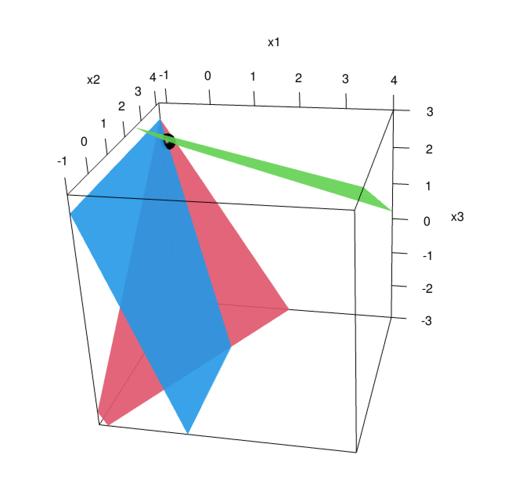
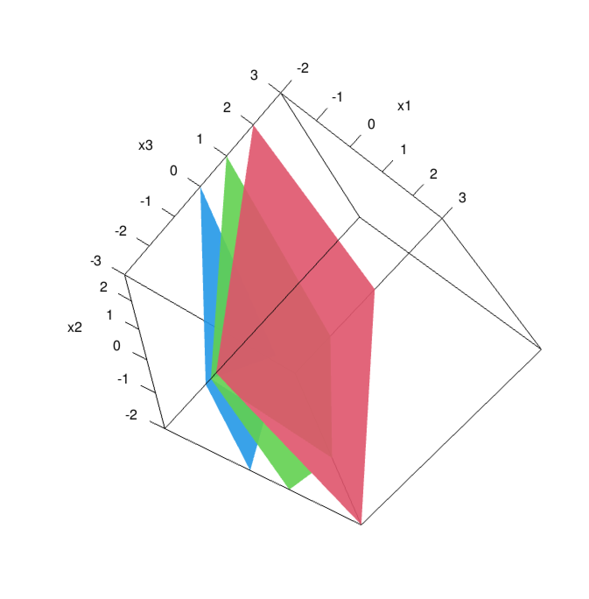

In this portfolio piece, I will demonstrate how to do some math in R. It turns out a lot of it is NOT enjoyable in R, so I am going to stick with solving and visualizing some simple systems of equations.
Lets slap together a system of equations and make a matrix:
| X | Y | Z | . |
|---|---|---|---|
| -2 | 1 | -1 | 4 |
| 1 | 2 | 3 | 13 |
| 3 | 0 | 1 | -1 |
To solve this system, we just take the Reduced Row Echelon Form of the matrix (RREF). We get exactly one solution, x=-1, y=4, z=2
| 1 | 0 | 0 | -1 |
| 0 | 1 | 0 | 4 |
| 0 | 0 | 1 | 2 |
Lets do it with one more system:
| X | Y | Z | . |
|---|---|---|---|
| 1 | -2 | 3 | -2 |
| -1 | 1 | -2 | 3 |
| 2 | -1 | 3 | -7 |
| 1 | 0 | 1 | -4 |
| 0 | 1 | -1 | -1 |
| 0 | 0 | 0 | 0 |
This is a dependent system with infinitely many solutions. let z = t, then x = -t-4, y = t-1, and we get solutions for any real number t.
Side note: it took a very long time to get these to work because I had to install some extra stuff (XQuartz), update my version of R, and get the rgl package working. It was worth it though! This technique creates some really cool 3d interactive plots, but they don’t show up in rmd. I can only view them in XQuartz. I will provide the code I used and the screenshots from XQuartz :-l
#1
A <- matrix(c(-2,1,3,
1,2,0,
-1,3,1), nrow=3)
b <- c( 4,13,-1)## x1 = -1
## x2 = 4
## x3 = 2plotEqn3d(A,b, xlim=c(-1,4), ylim=c(-1,4))
The second system of equations:
## 1*x1 - 2*x2 + 3*x3 = -2
## -1*x1 + 1*x2 - 2*x3 = 3
## 2*x1 - 1*x2 + 3*x3 = -7| System of Equations |
|---|
| 1x1 - 2x2 + 3*x3 = -2 |
| -1x1 + 1x2 - 2*x3 = 3 |
| 2x1 - 1x2 + 3*x3 = -7 |
plotEqn3d(C, d)